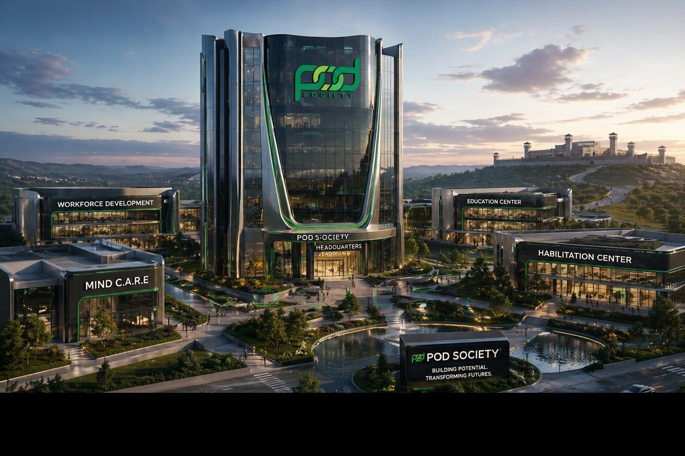

The POD Reentry Home
A safe place to live for men coming out of prison who need somewhere to stay, and the help to put their lives back together: a structured program, job skills classes, and mentors who have walked the same road.
Preview. This page describes the home as POD Society is planning it. The location, opening date, number of beds and eligibility are still being decided. Items marked like this are placeholders.
Why a home
Many people leave prison with little money and no safe place to sleep. Without a stable address it is hard to get an ID, a job or a bank account, hard to meet parole conditions, and easy to fall back into the people and places that led to prison.
The Reentry Home gives residents a stable place to land while they do the work of rebuilding: steady routines, clear expectations, and people around them who are pulling in the same direction. It continues the FORGE philosophy that many residents will already know from inside: you are a stakeholder in your own life and in your community, not a victim or a passenger.

What residents get
Planned services. Partners for some of these are still being confirmed.
A safe, structured place to live
A clean, drug- and alcohol-free house with a house agreement, curfew and shared responsibilities.
FORGE Successful Reentry
A program of stages, goals and weekly classes built on the FORGE philosophy. See the program
Job skills classes
Getting hired, keeping the job, digital and money basics, and paths into skilled work. See the classes
A mentor
One-on-one mentoring from credible messengers and certified FORGE mentors.
Help with the first weeks
IDs and documents, a phone, benefits, transportation, and getting to every parole or probation check-in.
Recovery and mental health
Connections to Mind C.A.R.E. and our recovery partners, without judgment.
Legal and parole support
Guidance on legal matters, parole conditions and building community credibility.
Family
Help reconnecting with family on terms that are safe and healthy for everyone.
Who it’s for
Men coming out of prison who need a place to stay and are ready to do the work. POD Society stands with men who show real change, personal accountability and a commitment to becoming productive, law-abiding citizens.
- Eligibility: to be confirmed
- Length of stay: about six months, following the program’s stages draft
- Cost to residents: to be confirmed
- Location and opening date: to be announced
Referrals
Referrals will come from the person coming home, their family, FORGE facilitators, parole and probation officers, and partner organizations. If you would like to be told when the home opens for referrals, or if you are a family member planning for a release date, contact us.
Families can start now: the S.I.P.P. program connects your loved one with POD before release.
Help build the home
The Reentry Home will depend on partners and supporters.
Hire
Employers who will interview residents, offer apprenticeships or teach a class.
Become an employer partnerHouse and serve
Property owners, churches and organizations who can help with space, mentoring or services.
Talk with us